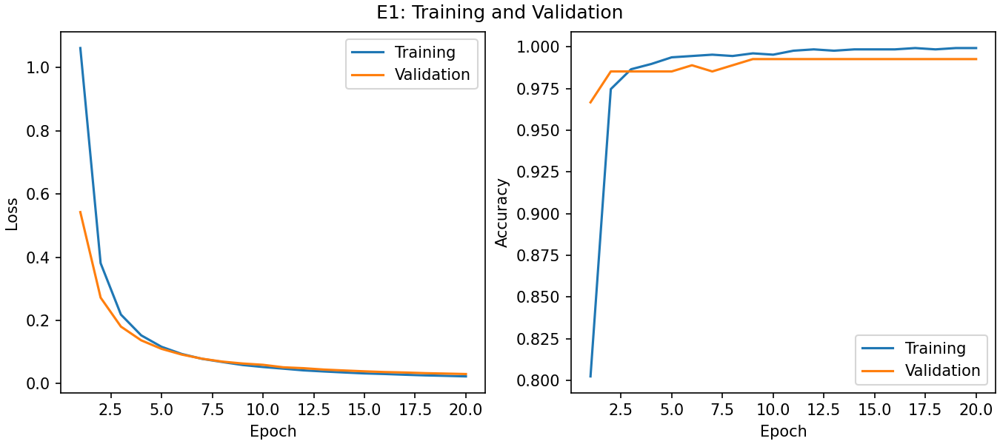
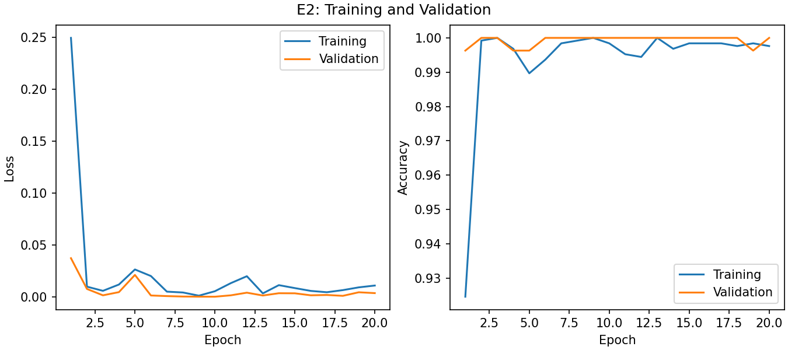
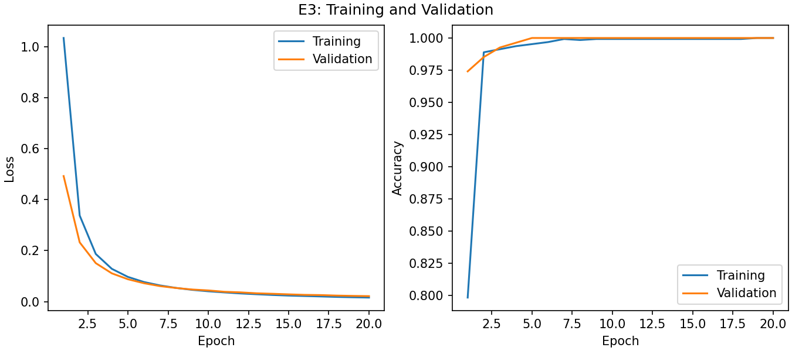
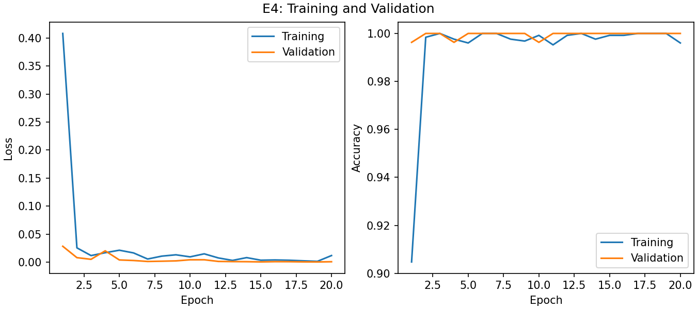
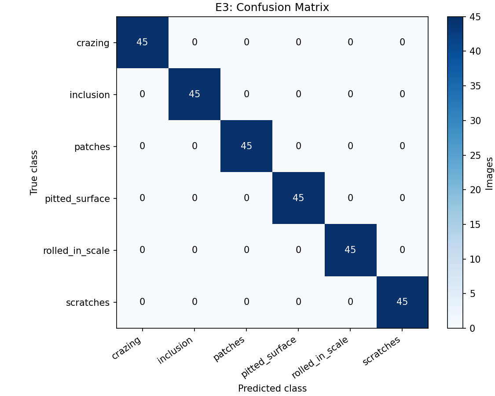

Team05 · Stage 2 Report：Transfer Learning Challenge
比較 CNN Architecture 與 Fine-tuning Strategy，找出最適合部署的鋼材表面瑕疵分類模型 ｜ 負責人：李安爵（B）
1. 實驗目的
Stage 2 比較不同 CNN Architecture 與 Fine-tuning Strategy 對鋼材表面瑕疵分類的影響，並從分類表現與部署成本兩方面選出最終分類模型。本 Stage 採 2 × 2 設計：兩個不同的 Architecture Family（ResNet18、DenseNet121）各自搭配兩種策略（Feature Extraction、Full Fine-tuning），共 4 組實驗（E1–E4）。四組使用相同的資料分割、前處理、超參數與評估流程，只有 learning rate 依策略設定，因此結果差異可歸因於架構與策略。
2. 資料與評估方式
- 資料：課程提供的 FactoryVision Classification Public Dataset，共 6 類，類別順序固定為 crazing、inclusion、patches、pitted_surface、rolled_in_scale、scratches。影像為 200 × 200 的 8-bit 灰階 PNG。
- 分割：沿用官方分割，train 1,260 張（每類 210 張）、validation 270 張（每類 45 張）。只用 train 訓練；validation 只用於選擇 epoch 與比較模型。未使用外部資料，也未使用網路上已 fine-tune 的 checkpoint。
- 前處理（訓練與驗證相同，未使用 data augmentation）：灰階影像轉為 3 通道（三個通道數值相同）→
Resize((224, 224))（bilinear）→ ToTensor() → Normalize，使用 ImageNet pretrained 權重的官方 mean [0.485, 0.456, 0.406] 與 std [0.229, 0.224, 0.225]。
- 評估指標：主要指標為 Macro F1，另報告 Accuracy、Macro Precision、Macro Recall 與 Confusion Matrix；部署成本記錄 Params、Trainable Params、checkpoint 大小與推論時間（Latency）。
- 資料限制：官方分割中 train 的
TRN_0504.png 與 validation 的 patches/VAL_0101.png 內容完全相同（團隊以 SHA-256 核對）。本 Stage 保留官方分割，未移除或修改。
3. 方法
3.1 Architecture 與 Pretrained 來源
Table 1：兩個 Architecture Family 與 pretrained 權重來源
| Architecture | Family 特色 | Params（6 類） | Pretrained source（torchvision 0.22.1，ImageNet-1K） |
|---|
| ResNet18 | Residual connection：以 skip connection 將輸入加回輸出，18 層 | 11,179,590 | ResNet18_Weights.IMAGENET1K_V1
https://download.pytorch.org/models/resnet18-f37072fd.pth |
| DenseNet121 | Dense connectivity：每層接收前面所有層 feature map 的串接，121 層 | 6,960,006 | DenseNet121_Weights.IMAGENET1K_V1
https://download.pytorch.org/models/densenet121-a639ec97.pth |
兩個模型都把原本 1000 類的 ImageNet 分類層換成新的 6 類 Linear 層：ResNet18 的 fc 改為 Linear(512 → 6)，DenseNet121 的 classifier 改為 Linear(1024 → 6)。
3.2 Fine-tuning Strategy
- Feature Extraction：凍結整個 pretrained backbone（
requires_grad = False），只訓練新的分類層。訓練時整個網路維持 eval() 模式，使 BatchNorm 沿用 ImageNet 的 running mean / var，backbone 完全不被更新。訓練後以程式比對 checkpoint 與原始 ImageNet 權重：E1 的 120 個與 E3 的 725 個 backbone tensor 皆未改變，只有分類層的 weight 與 bias 改變。
- Full Fine-tuning：以 ImageNet 權重為起點，所有層都參與訓練。為避免一開始就大幅破壞 pretrained 特徵，learning rate 設為 Feature Extraction 的十分之一。
Table 2：各實驗的 frozen / trainable layers 與 learning rate
| Exp | Architecture | Strategy | Frozen layers | Trainable layers | Trainable Params | Learning rate |
|---|
| E1 | ResNet18 | Feature Extraction | conv1、bn1、layer1–layer4 | fc | 3,078 | 0.001 |
| E2 | ResNet18 | Full Fine-tuning | 無 | 全部 | 11,179,590 | 0.0001 |
| E3 | DenseNet121 | Feature Extraction | features | classifier | 6,150 | 0.001 |
| E4 | DenseNet121 | Full Fine-tuning | 無 | 全部 | 6,960,006 | 0.0001 |
3.3 訓練設定與選模規則
Table 3：四組實驗共同的訓練設定
| 項目 | 設定 | 項目 | 設定 |
|---|
| Input size | 224 × 224 × 3 | Optimizer / Loss | Adam / CrossEntropyLoss |
| Epochs / Batch size | 20 / 32 | Weight decay | 0 |
| Random seed | 42 | Framework | PyTorch 2.7.1、torchvision 0.22.1 |
| 訓練裝置 | Apple M2 Max（MPS） | Latency 量測裝置 | Apple M2 Max CPU |
- 選 epoch：每組在 20 個 epoch 中選 validation Macro F1 最高者；若多個 epoch 同分，選 validation loss 最低者。該 epoch 的
state_dict 存為 checkpoint，報告中的指標都是重新載入該 checkpoint 後在 validation 上的結果。
- 選最終模型：validation Macro F1 最高者；同分時依團隊規則選參數量較少者。
4. 結果
Table 4：E1–E4 的 validation 結果（每組最佳 epoch）
| Exp | Setting | Accuracy | Macro P | Macro R | Macro F1 | Params | Size (MB) | Latency (ms) |
|---|
| E1 | ResNet18 + Feature Extraction | 0.9926 | 0.9927 | 0.9926 | 0.9926 | 11,179,590 | 42.71 | 8.73 |
| E2 | ResNet18 + Full Fine-tuning | 1.0000 | 1.0000 | 1.0000 | 1.0000 | 11,179,590 | 42.71 | 9.45 |
| E3 | DenseNet121 + Feature Extraction | 1.0000 | 1.0000 | 1.0000 | 1.0000 | 6,960,006 | 27.08 | 30.99 |
| E4 | DenseNet121 + Full Fine-tuning | 1.0000 | 1.0000 | 1.0000 | 1.0000 | 6,960,006 | 27.08 | 34.30 |
Size 為 checkpoint 檔案大小（bytes ÷ 1024²）。Latency 為 batch size 1、暖機 10 次後連續推論 100 次的平均，單位 ms / 張，只計模型推論、不含讀檔。
4.1 訓練過程
Table 5：訓練過程摘要（取自各組 history）
| Exp | 第 1 個 epoch 的 val Macro F1 | 最早達到最高 val Macro F1 的 epoch | 之後 val Macro F1 下降的 epoch | Best epoch | Best epoch 的 val loss |
|---|
| E1 | 0.9664 | 9 | 無 | 20 | 0.0304 |
| E2 | 0.9963 | 2 | 4、5、19 | 10 | 0.0004 |
| E3 | 0.9740 | 5 | 無 | 20 | 0.0218 |
| E4 | 0.9963 | 2 | 4、10 | 19 | 0.0004 |

Figure 1：E1（ResNet18 + Feature Extraction）的 Training / Validation Loss 與 Accuracy。

Figure 2：E2（ResNet18 + Full Fine-tuning）的 Training / Validation Loss 與 Accuracy。

Figure 3：E3（DenseNet121 + Feature Extraction）的 Training / Validation Loss 與 Accuracy。

Figure 4：E4（DenseNet121 + Full Fine-tuning）的 Training / Validation Loss 與 Accuracy。
4.2 分析
- Strategy 的影響：Full Fine-tuning 收斂最快，E2 與 E4 在第 1 個 epoch 的 validation Macro F1 都是 0.9963，第 2 個 epoch 就達到 1.0000。但因為所有參數都在更新，之後偶爾會掉回 1.0000 以下（Table 5），曲線也較不平穩（Figure 2、Figure 4）。Feature Extraction 只訓練分類層，起步較慢（E1 為 0.9664、E3 為 0.9740），但 validation 曲線平穩上升，達到最高分後沒有再下降。
- Architecture 的影響：在 Full Fine-tuning 下，兩個架構都達到 1.0000，無法區分。在 Feature Extraction 下，DenseNet121（E3）達到 1.0000，ResNet18（E1）為 0.9926，代表在不更新 backbone 時，DenseNet121 的 ImageNet 特徵已足以分開 6 類，ResNet18 的特徵則有 2 張分錯。不過差距只有 270 張中的 2 張，不宜過度解讀。
- Overfitting 與收斂：Feature Extraction（E1、E3）的 training 與 validation loss 每個 epoch 都在下降，第 20 個 epoch 仍是最低，表示可能尚未完全收斂；但 Macro F1 已經達到該組最高值，因此不影響本報告的選模結論。Full Fine-tuning 的 validation loss 從第 2 個 epoch 起就在低點附近上下波動（E2 介於 0.0004 與 0.0214 之間，E4 介於 0.0004 與 0.0203 之間），沒有持續上升的趨勢。四組在 validation 上都看不出明顯的 overfitting。

Figure 5：最終模型 E3（DenseNet121 + Feature Extraction）在 validation 的 Confusion Matrix（列為真實類別、行為預測類別，數字為張數）。270 張全部分類正確。
5. 錯誤案例分析
E2、E3、E4 在 validation 上沒有分錯的影像，只有 E1 分錯 2 張：一張 inclusion 被判成 pitted_surface，一張 scratches 被判成 inclusion（Figure 6）。

E1 分錯：
inclusion/VAL_0083預測為 pitted_surface

真實類別範例
inclusion/VAL_0046
真實類別範例
inclusion/VAL_0050
預測類別範例
pitted_surface/VAL_0136
預測類別範例
pitted_surface/VAL_0140
E1 分錯：
scratches/VAL_0228預測為 inclusion

真實類別範例
scratches/VAL_0226
真實類別範例
scratches/VAL_0230預測類別範例
inclusion/VAL_0046預測類別範例
inclusion/VAL_0050
Figure 6：E1 分錯的 2 張 validation 影像（最左），與真實類別、預測類別的範例對照。範例取該類別 validation 依檔名排序的第 1 與第 5 張，E1 對這些範例皆分類正確。
以下觀察來自檢視各類別部分 validation 影像（每類依檔名排序每隔 4 張取 1 張，共 10 張）：
inclusion/VAL_0083 → pitted_surface：檢視的 inclusion 影像多為灰暗背景上的暗色細長斑點。這張的背景明顯較亮，瑕疵是許多分散的小暗點，整體外觀接近 pitted_surface 常見的亮底點狀紋理。scratches/VAL_0228 → inclusion：檢視的 scratches 影像多為明顯的垂直亮色線條。這張同樣是垂直亮線，但線條細而淡、與背景對比低；inclusion 也常見垂直的細長條紋（但為暗色）。推測 E1 抓到了「垂直細長」的形狀，但在對比低時沒有分辨出亮暗差異。- 可能原因：E1 的 backbone 完全沿用 ImageNet 特徵，沒有針對鋼材紋理調整，只靠一層 Linear 分類，對背景亮度、線條對比等外觀差異較敏感。同樣是 ResNet18，Full Fine-tuning（E2）調整 backbone 後這兩張都分對；DenseNet121 即使凍結 backbone（E3）也分對。
- 限制：最終模型 E3 在 validation 上沒有錯誤，因此無法從 validation 進一步分析它的弱點。
6. Deployment Analysis
Table 6：分類表現與部署成本
| Exp | Setting | Macro F1 | Params | Trainable Params | Size (MB) | Latency (ms) |
|---|
| E1 | ResNet18 + Feature Extraction | 0.9926 | 11,179,590 | 3,078 | 42.71 | 8.73 |
| E2 | ResNet18 + Full Fine-tuning | 1.0000 | 11,179,590 | 11,179,590 | 42.71 | 9.45 |
| E3 | DenseNet121 + Feature Extraction | 1.0000 | 6,960,006 | 6,150 | 27.08 | 30.99 |
| E4 | DenseNet121 + Full Fine-tuning | 1.0000 | 6,960,006 | 6,960,006 | 27.08 | 34.30 |
- 分類表現：E2、E3、E4 的 validation Macro F1 都是 1.0000。270 張 validation 已無法區分這三組，因此部署選擇主要取決於成本。
- 模型大小：DenseNet121 的參數量（6,960,006）與 checkpoint（27.08 MB）都小於 ResNet18（11,179,590、42.71 MB），儲存與傳輸成本較低。
- 推論時間：DenseNet121 雖然參數較少，CPU 推論卻較慢（E3 為 30.99 ms、E4 為 34.30 ms；E1 為 8.73 ms、E2 為 9.45 ms）。可能原因是 DenseNet121 層數較多，且每層都要串接前面所有層的 feature map，在 batch size 1 時運算與記憶體存取較多。因此參數量少不代表推論快。
- 訓練與維護成本：Feature Extraction 只訓練 3,078（ResNet18）或 6,150（DenseNet121）個參數，backbone 維持 ImageNet 權重，日後重新訓練或新增瑕疵類別時成本較低；Full Fine-tuning 需要更新全部參數，訓練時需要較多運算與記憶體。本 Stage 未記錄各組的訓練時間。
- 部署情境：若產線最重視單張影像在 CPU 上的處理速度，ResNet18 + Full Fine-tuning（E2）較適合；若重視模型檔案大小、訓練穩定度與維護成本，DenseNet121 + Feature Extraction（E3）較適合。
- TODO：上表 Latency 是在 Apple M2 Max CPU 上量測，重複執行時數值會有波動。待團隊確認是否在 RTX 2060 上以相同條件重新量測，再更新本表與
results/*.json。
7. Final Model Decision
最終模型為 E3：DenseNet121 + Feature Extraction，存為 stage2_model.pth（即 checkpoints/E3.pth，27.08 MB），設定記錄在 config.json。選擇理由：
- Validation Macro F1 為 1.0000，與 E2、E4 同為最高。
- 依團隊選模規則，同分時選參數量較少者。DenseNet121 的參數量（6,960,006）少於 ResNet18（11,179,590），checkpoint 也較小。
- E3 與 E4 的參數量相同。E3 只訓練 6,150 個參數，backbone 保持 ImageNet 權重；在只有 1,260 張訓練影像的情況下，較不容易 overfit。它的 validation 曲線在達到 1.0000 後沒有再下降，比 E4 平穩，CPU 推論時間也較短（30.99 ms 對 34.30 ms）。
代價是 E3 的 CPU 推論時間高於 ResNet18（E1 為 8.73 ms、E2 為 9.45 ms）。若部署環境對單張推論速度有嚴格要求，E2 是替代方案。
8. 限制
- 三組實驗的 validation 指標都是 1.0000，270 張 validation 影像無法區分它們的泛化能力差異；validation 中還有一張與 train 重複的影像。
- 每組只用 seed 42 訓練一次；MPS 運算不保證每次結果完全相同，重跑的數字可能有些微差異。本報告數字以
results/*.json 為準。
- Feature Extraction 的 best epoch 為最後一個 epoch，可能尚未完全收斂。
- Latency 只在 Apple M2 Max CPU 上量測，未記錄訓練時間。
重現方式（環境、指令與參數）見 README.md。